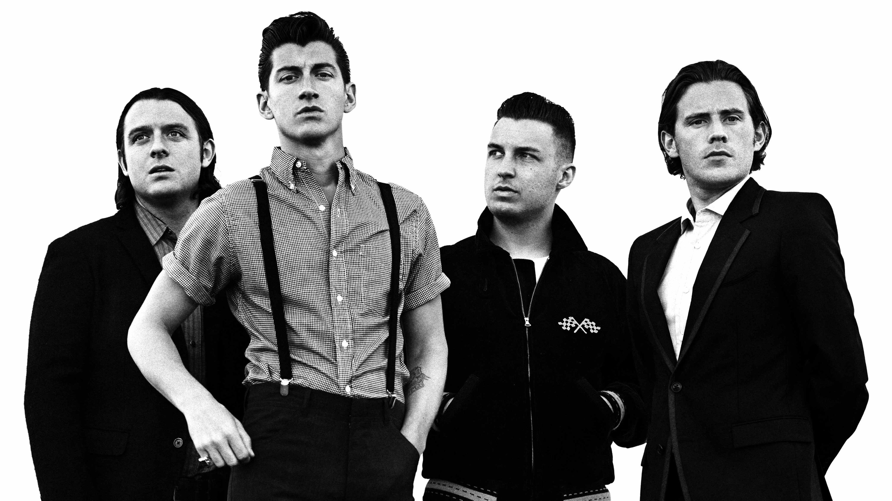
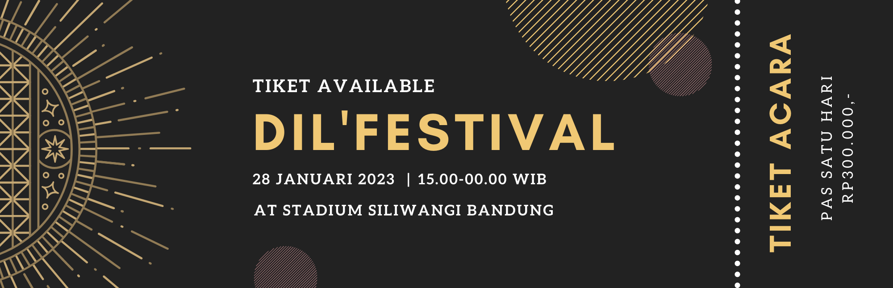
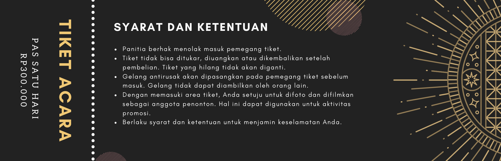
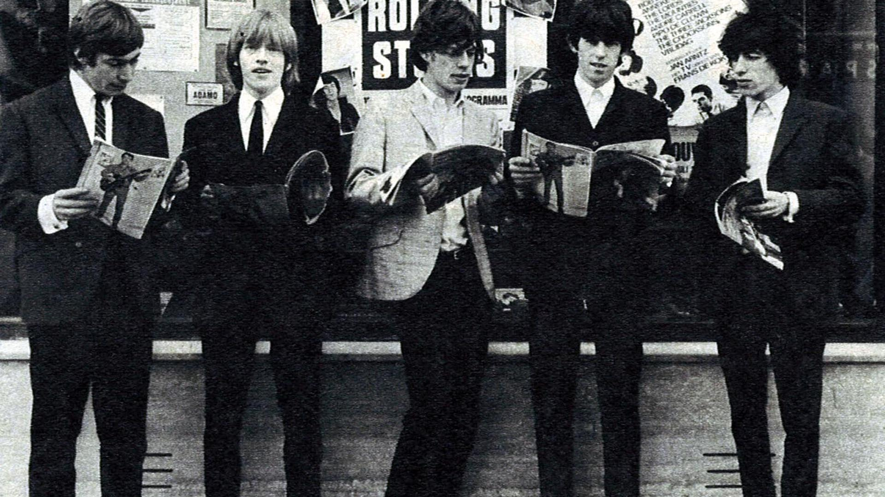
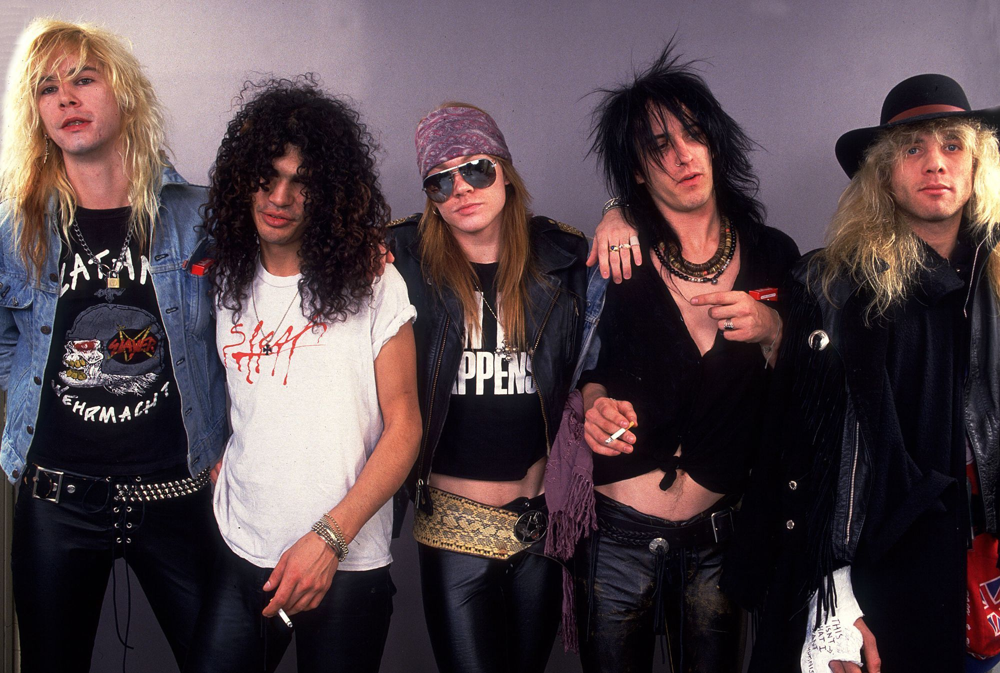
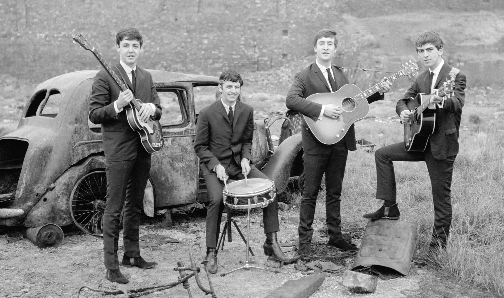
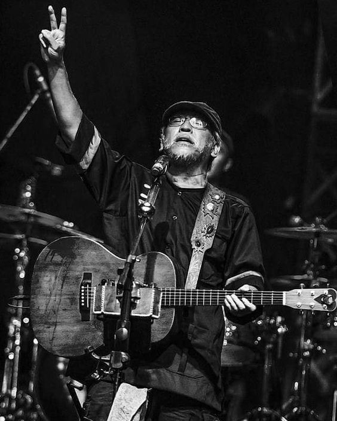
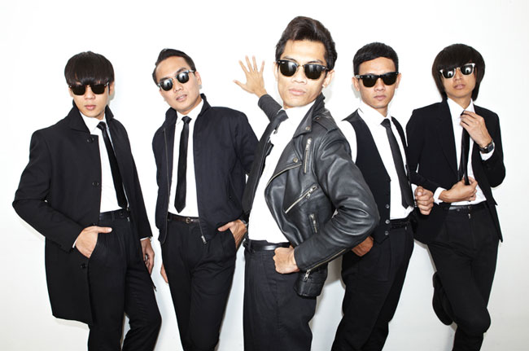
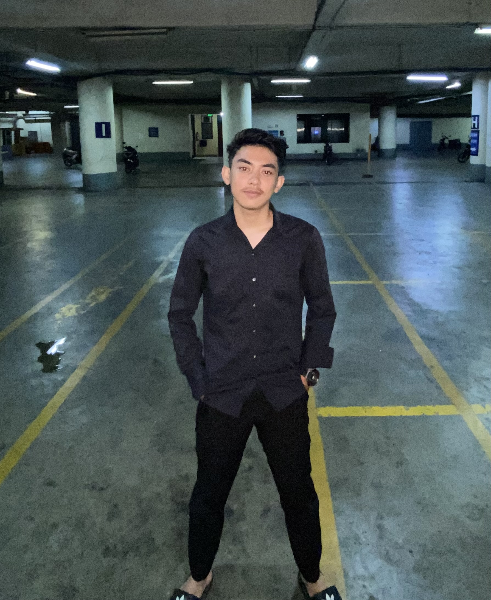
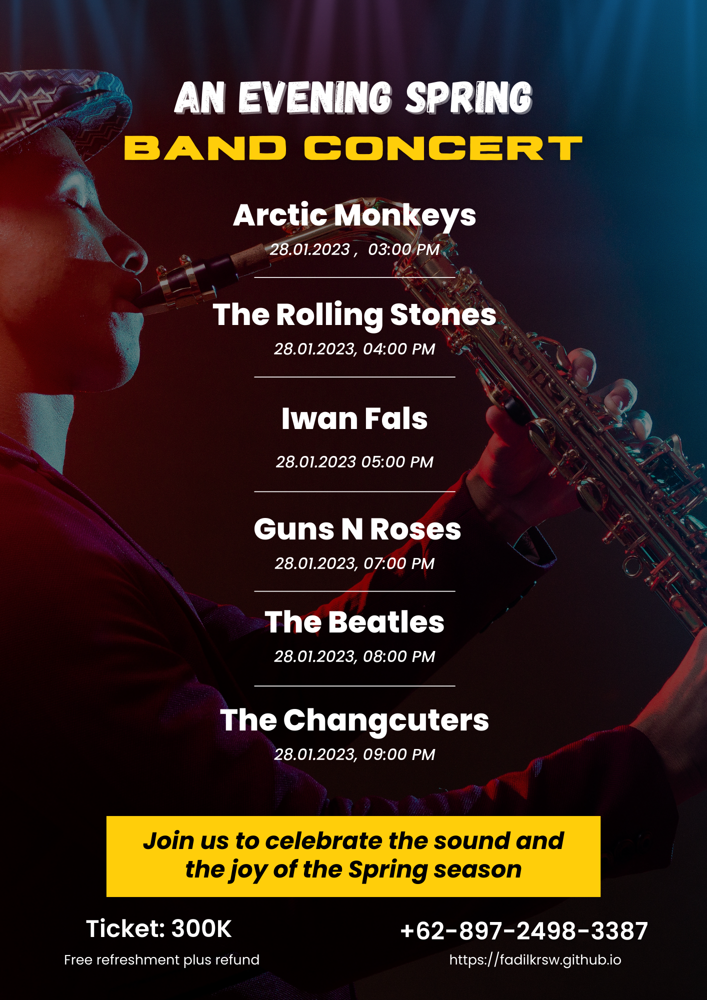

ARCTIC MONKEYS

Arctic Monkeys merupakan grup musik rock asal Inggris, band ini juga dikenal dengan nama The Death
Ramps. Dibentuk tahun 2002 di High Green, distrik Sheffield, Inggris. Arctic Monkeys beranggotakan Alex
Turner (vokal utama, gitar utama, keyboard), Jamie Cook (rhythm gitar), Nick O'Malley (bass, backing
vokal), Matt Helders (drum, perkusi, backing vokal). Anggota band sebelumnya Andy Nicholson (bass) dan
Glyn Jones (vokal utama).
WELCOME TO DIL'FEST WEBSITE


THE ROLLING STONES

The Rolling Stones adalah sebuah band rock Inggris yang mulai terkenal sejak tahun 1960-an masih
terkenal hingga sekarang. Apabila dianalogikan, The Rolling Stones adalah sebuah batu yang hingga kini
masih menggelinding, entah sampai kapan.
Dibentuk di London, Januari 1963. Tetapi sesungguhnya cikal bakal Stones sudah ada sejak tahun 1962
dengan formasi awal yang terdiri dari Mick Jagger (Vokal, Harmonika), Keith Richards (Lead Gitar,
Harmonika), Brian Jones (Rhytm Gitar, Harmonika), Mick Avory (Drums) dan Dick Taylor (Bass). Kelak sang
drummer Mick Avory akhirnya bergabung dengan The Kinks dbp Ray davies, dan Dick Taylor mendirikan
bandnya sendiri yaitu The Pretty Things.
GUNS N ROSES

Guns N' Roses (GNR) adalah kelompok Band musik hard rock dari Amerika Serikat yang berdiri pada
tahun 1984 dan diresmikan pada Maret 1985.
Dengan personel yang paling terkenal Axl Rose - lead vocal (1985-sekarang), Slash - lead guitar (1985-
1996,2016-sekarang), Izzy Stradlin - rhythm guitar (1985-1991), Duff McKagan - bass (1985-1998,2016-
sekarang) dan Steven Adler - drum (1985-1990).
THE BEATLES

The Beatles adalah kelompok pemusik Inggris beraliran rock, dibentuk di Liverpool pada tahun 1960,
sering kali dianggap sebagai pemusik tersukses secara komersial dan paling banyak mendapat pujian
dalam musik populer. Sejak tahun 1962, kelompok ini terdiri dari John Lennon (gitar pengiring, vokal), Paul
McCartney (gitar bass, vokal), George Harrison (gitar melodi, vokal), Ringo Starr (drum, vokal). Bermula
dari aliran skiffle dan rock and roll 1950-an, kelompok ini nantinya memainkan musik dalam berbagai genre
mulai dari folk rock sampai rock psikedelik, memasukkan juga unsur musik klasik dan elemen lain dengan
cara inovatif. The Beatles dipandang sebagai perwujudan ide-ide progresif, berpengaruh terhadap revolusi
sosial budaya pada dekade 60-an.
Awalnya 5 orang terdiri dari Lennon, McCartney, Harrison, Stuart Sutcliffe (bas) dan Pete Best (drum), The
Beatles hanya terkenal di klub-klub Liverpool dan Hamburg selama 3 tahun mulai tahun 1960. Sutcliffe
hengkang tahun 1961, dan Best diganti Starr tahun berikutnya. Beatles ditempa jadi profesional oleh
seorang pengusaha toko musik bernama Brian Epstein setelah ia jadi manajer mereka dan potensi musik
dipoles oleh produser George Martin.
IWAN FALS

Virgiawan Liestanto, terkenal dengan nama panggungnya Iwan Fals (lahir 3 September 1961) adalah
seorang penyanyi, musisi, pencipta lagu, dan kritikus yang menjadi salah satu legenda di Indonesia. Gaya
bermusiknya telah dikatakan sebagai pop, rock, country, dan folk pop dan liriknya banyak menceritakan
masa-masa kelam era 1970 hingga 1980-an di bidang politik. Iwan Fals masuk ke dalam daftar The
Immortals: 25 Artis Indonesia Terbesar Sepanjang Masa versi majalah Rolling Stone Indonesia.
Masa kecil Iwan Fals dihabiskan di Bandung, kemudian di Jeddah, Arab Saudi, selama 8 bulan. Bakat
musiknya makin terasah di usianya yang ke-13 tahun, saat Iwan banyak menghabiskan waktunya dengan
mengamen di Bandung. Bermain gitar dilakukannya sejak masih muda atau belum tua bahkan ia
mengamen untuk melatih kemampuannya bergitar dan mencipta lagu. Ketika di SMP, Iwan menjadi gitaris
dalam paduan suara sekolah.
THE CHANGCUTERS

The Changcuters merupakan sebuah grup musik garage rock asal Bandung, Indonesia. Grup musik yang
dibentuk pada tanggal 19 September 2004 ini beranggotakan Mohammad Tria Ramadhani (vokalis),
Muhammad Iqbal atau Qibil (backing vocal & gitaris), Arlanda Ghazali Langitan (gitaris), Dipa Nandastyra
Hasibuan (bassis), dan Erick Nindyoastomo (drummer). Album pertamanya adalah Mencoba Sukses (2006)
dan diikuti album kedua (repackaged) Mencoba Sukses Kembali dirilis pada tahun 2008. Band ini umumnya
bergenre rock. mereka menamai aliran musik mereka "ala kita garasi rock n roll".
Berdirinya band ini diprakarsai oleh Dipa, Tria dan Qibil yang teman sekampus. Mereka pun mengajak Alda
dan Erick, yang juga teman Qibil main band saat SMU. Nama The Changcuters bukan bermakna jorok atau
berasal dari Bahasa Sunda yang berarti pakaian dalam pria. Tapi berasal dari nama seorang sahabat,
Cahya; Cahya sering dipanggil dengan sebutan Cangcut atau Cut yang akhirnya jadi popular lantaran
panggilan itu terdengar lucu bagi mereka. Jauh sebelum terbentuknya The Changcuters, sewaktu mereka
semua masih berada di bangku SMA, ternyata Qibil dan Erick pernah membentuk sebuah grup musik yang
bernama "Cholesterol" bersama dengan Ariel dan Uki.
PROFILE

Nama : Fhadilla Kriswari
NIM : 10122204
Kelas : IF-6
